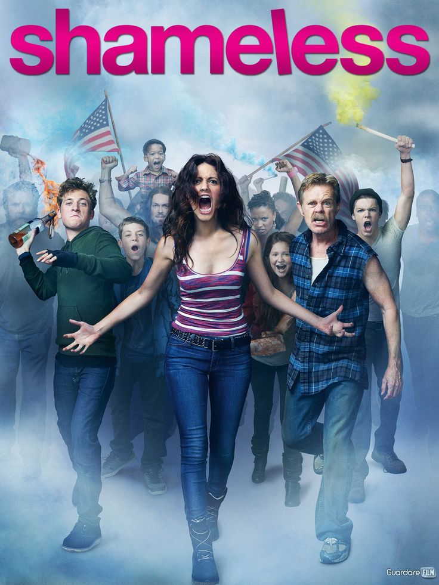
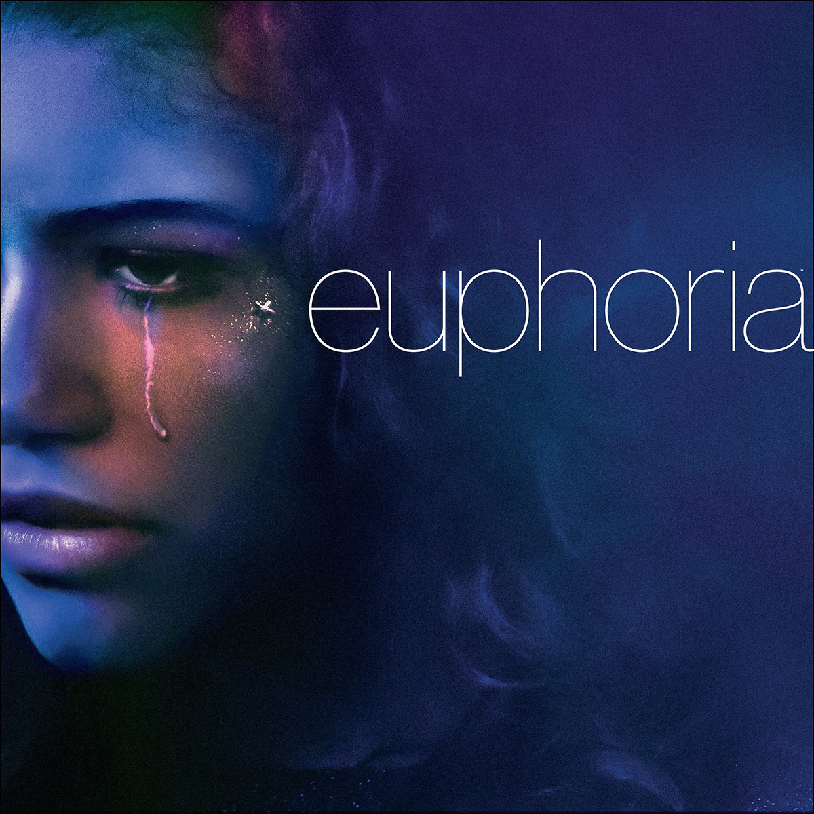
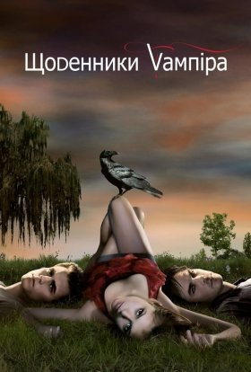

Найкращі серіали на вечір
Усі серіали вважаються кращими суто на мою особисту думку
1. Shameles
На вигляд незвичайна сім'я Галлагеров проживає у Великобританії десь в районі Манчестера.
На цьому і побудований сюжет серіалу. Для різноманітності додані їх сусіди.
Разом з ними вони створюють безглузді і неповторні ситуації, завдяки яким стає видно барвистість нашого світу

2. Ейфорія
У центрі історії — складне і хаотичне життя сучасних школярів з старших класів.
Будні підлітків нудними не назвеш: психологічні травми, жорстокість, наркотики, дружба, соцмережі та кохання.

3.Щоденники вампіра
Головна героїня серіалу «Vampire Diaries» Олена Гілберт незважаючи на юний вік зіткнулася з серйозними проблемами,
адже її батьки загинули в автокатастрофі. Олена і її брат тепер живуть з тіткою Дженною, і дівчина повільно замикається в собі,
поки молодший брат Джеремі знаходить розраду в наркотиках. В цей час школу починає відвідувати новий учень - Стефан Сальваторе.
Він приховує від усіх, що насправді є вампіром, проте не пишається цим і намагається контролювати апетити, вже довгі десять років
харчуючись тільки кров'ю тварин. Він повернувся сюди, щоб знайти Олену, схожу на його загиблу багато років назад кохану Кетрін.
З'являється в містечку і брат Стефана Деймон. Він теж вампір, але на відміну від брата користується своїми здібностями вельми активно.
Деймон спокушає подругу Олени Керолайн Форбс, яка, перебуваючи під навіюванням, покірно виконує всі його вказівки.
Протистояння братів, їхні почуття до однієї і тієї ж дівчини, робить життя в Містик-Фоллс ще більш насиченим і небезпечним.

Інші наші статті